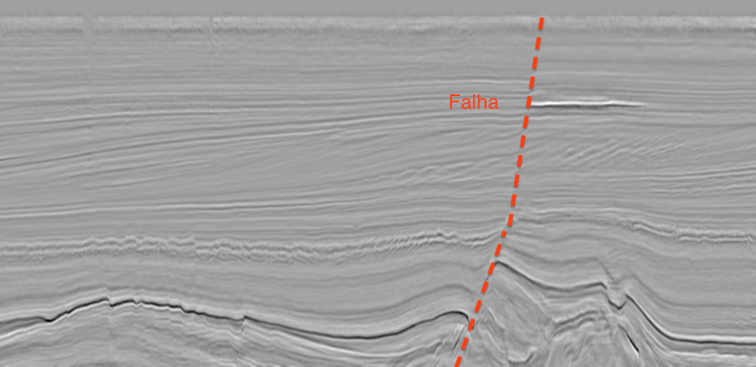

Wallas H. S. Santos
Imagens Sísmicas
Introdução
Para análise da geologia de uma dada região, o método sísmico é uma abordagem utilizada para gerar modelos e processamento de dados.
Esta página tem como objetivo apresentar uma abordagem de realce de horizontes e falhas sísmicas em imagens de reflexão de ondas.

Imagem sísmica exemplo.
Quality Threshold
O algoritmo de clusterização Quality Threshold (QT) foi aplicado ao agrupamento de dados alternativos, proposto inicialmente para o agrupamento de genes do cromossomo humano (XU, 2005; JIANG, 2006).
- 1. Inicialmente, é necessário escolher um limiar de qualidade para formação do cluster. Esse limiar é um valor informado pelo usuário que irá determinar à abrangência de cada cluster. Com isso o número total de clusters é inversamente proporcional ao valor do diâmetro, ou seja, quanto menor o diâmetro mais clusters resultantes teremos no processamento;
- 2. Para cada ponto, será calculada a distância euclidiana entre ele e os demais pontos, dessa forma o algoritmo irá executar o processo de geração dos clusters candidatos. A formação dos candidatos é delimitada pelo limiar estabelecido anteriormente, assim se a distância for menor ou igual ao limiar aqueles dois pontos em questão compõem o mesmo candidato, caso contrário, o valor da distância seja maior que o limiar esse ponto não constituirá esse cluster. Deste modo o ponto fará parte de outro cluster cuja a distância atenda ao critério de formação, menor ou igual ao limiar. Este procedimento é realizado para os pontos restantes gerando todos os candidatos a clusters.
- 3. Nessa etapa será calculado entre os clusters candidatos o que possuir o maior número de pontos a ele associado, dessa forma esse cluster candidato passará a ser um verdadeiro cluster. Os pontos que compõem o melhor candidato são removidos da amostra original, logo, ficará a execução mais rápida, ou seja, com a remoção dos pontos da amostra original a quantidade a ser processada na próxima iteração será menor.
- 4. Repetir o novamente os passos 2 e 3 até que os demais pontos sejam alocados nos seus respectivos clusters.
Metodologia
O (Qt) foi utilizado na metodologia para agrupar intensidades de pixels na imagens. Essa intensidades representam os picos e os vales de ondas refletidas pelo estímulo sonoro vindo da superfície nas camadas dos solos.
O Qt tem como parâmetro principal a distância entre os grupos. Na metodologia foi adotado por não se saber quantos grupos seria ideal para segmentar os horizontes. No problema em questão, quanto maior a distância, mais horizontes são agrupados em um mesmo grupo, do contrário as intensidades das ondas.
Resultados


Imagens binárias com clusteres resultantes da aplicação do Qt. Os pixels com cor branca representa qu

Referências
JIANG, D.; TANG, C.; ZHANG, A. Cluster analysis for gene expression data: A survey. IEEE Transactions on Knowledge and Data Engineering, 16 (11) 1370-1386, New York, 2006.
XU R.; WUNSCH, D. Survey of clustering algorithms. IEEE Transactions on Neural Networks, vol. 16, n. 3, p. 645 - 678, 2005.